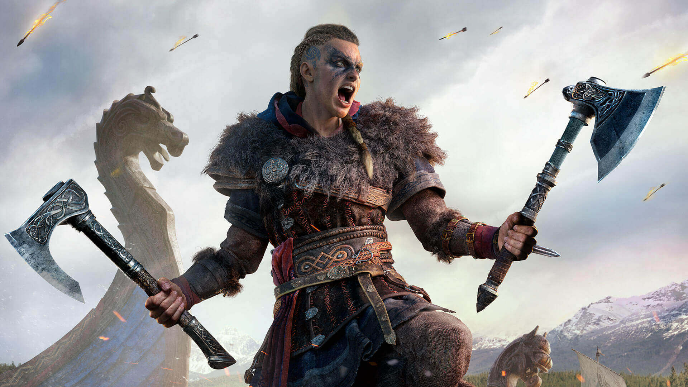
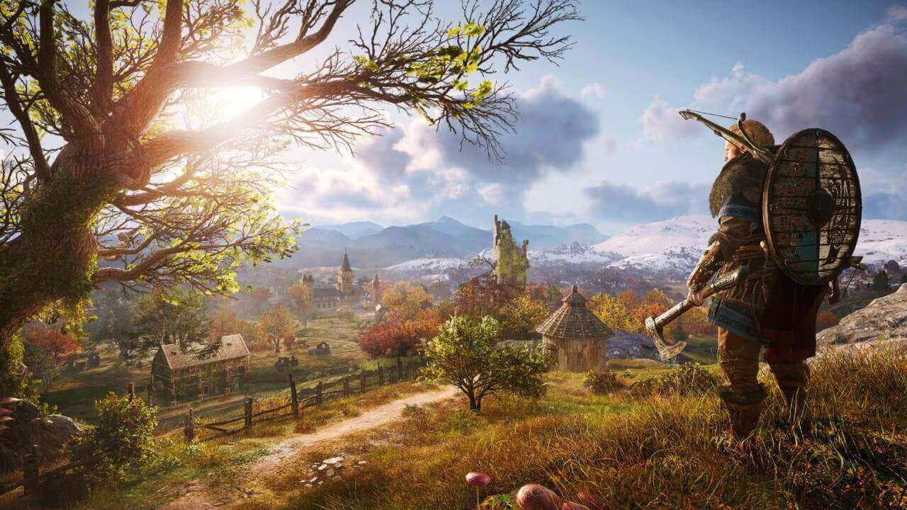
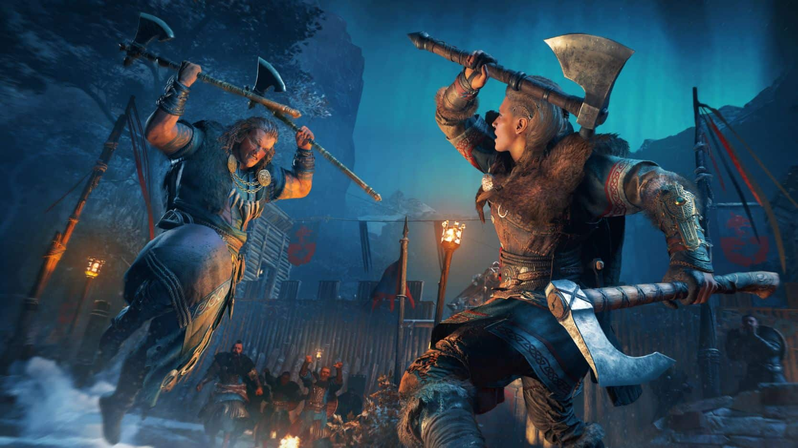
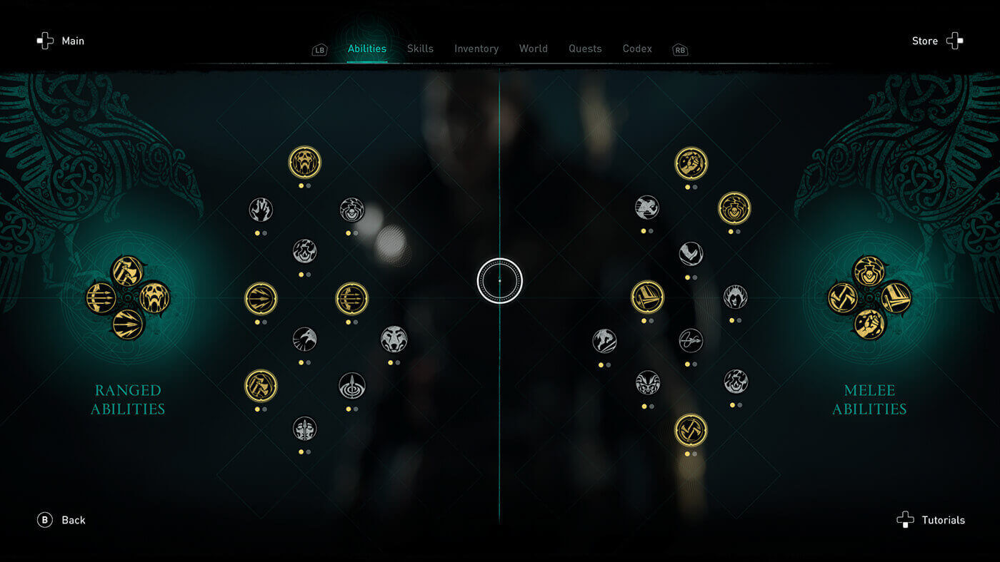
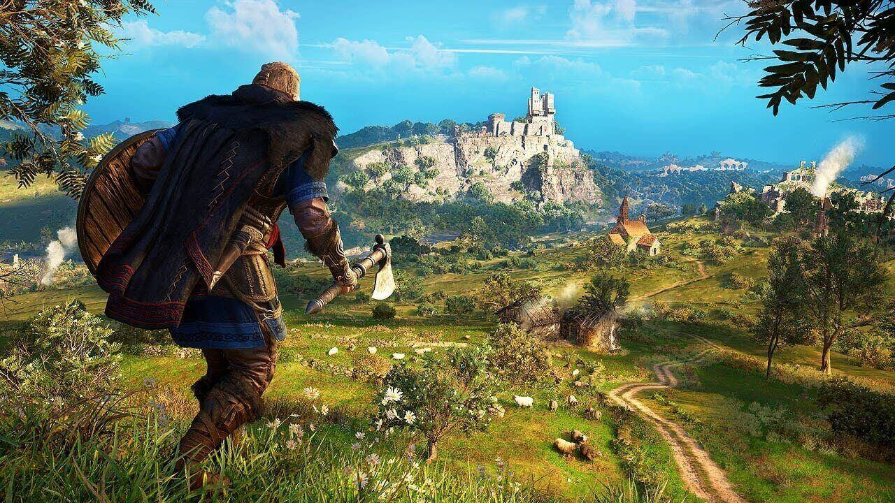
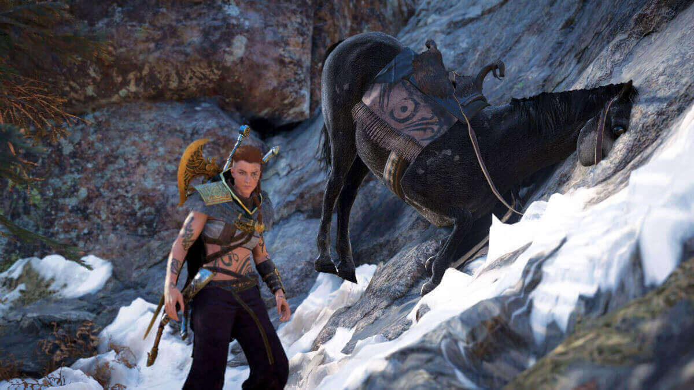

Assassin's Creed Valhalla

Aviso: Este análisis se ha hecho jugando solo la versión de PC
Ubisoft nos trajo una aventura inmensa y de un trabajo enorme que me hizo pasear por algunos de los paisajes más lindos que haya visto en un videojuego. Un proyecto que, a pesar de sus muy buenas intenciones, sigue teniendo difícil escapar de sus ya habituales fantasmas. Bienvenidos al Valhalla.
Trailer
De Inglaterra Hasta Valhalla
En esta ocasión vivirás la historia de Eivor Varinsdottir, una vikinga que cuenta con grandes hazañas dentro del clan del cuervo. Ella y su hermano Sigurd son muy fieles a su clan y a su gente, pero debido a algunas decisiones en las que no estuvieron de acuerdo con el jefe, se marchan de él.
De esta forma llegan a Inglaterra para reformar dicho clan formando alianzas con los demás clanes que habitan estas tierras e irán fortaleciéndose cada vez mas (¿Cuantas veces dije clan?). Todo esto mientras se ven envueltos en la eterna lucha entre los ocultos y la orden de los antiguos.
También se cuenta la historia de las cosas que están pasando en el «presente» del juego, pero es mejor que la experimenten ustedes.

Al iniciar la historia te dan la opción de seleccionar el genero de Eivor, podes elegir entre un personaje masculino o uno femenino, pero hay una tercera opción que te deja jugar con los dos a la vez.
Cuando cualquiera de los dos generos que presenta el juego tenga más impacto en una escena en particular, tu personaje va a cambiar de femenino a masculino y viceversa. Suena medio raro, pero es la mejor opción si queres experimentar las mejores partes de cada uno de los Eivor.
Siempre vas a tener disponible la opción elegir un genero definido u optar por esta alternativa.
La Brutalidad Vikinga y El Sigilo De Un Asesino
Desde los juegos anteriores le metieron cambios muy notorios al sistema de combate, y en este juego es donde sobresale. La hermandad de los asesinos aún no está hecha formalmente pero ya cuentan con los principios y, claro, con el arma predilecta de estos. Aún no hay nada establecido en cuanto al estilo de combate, así que cada quien pelea como sabe.
Gracias a la fama que tienen los vikingos de ser tan brutales en el campo de batalla, el sistema de combate le queda perfecto. El sigilo y todo lo que caracteriza a los asesinos sigue presente, pero a veces es necesario recurrir a tu furia vikinga.

El juego cuenta con algunos elementos RPG. Podes mejorar tus armas y armadura, como también equipar sets de armaduras que te dan diferentes ventajas y hasta desbloquear habilidades con el árbol de habilidades.
Es algo simple, pero se pueden crear sets muy buenos. En mi caso tengo un arma que se prende en fuego cada que realizas un ataque critico, con las runas aumenté la probabilidad de críticos, al matar a los enemigos se activa una habilidad por haberlos quemado, creando un desastre muy genial.
Las habilidades afectan mucho tu estilo de juego, pero el juego es muy amable en cuanto a las habilidades. Podes recuperar tus puntos de habilidades y gastarlos en otras en cualquier momento. Aunque al final vas a terminar con todas las habilidades desbloqueadas.

Mucha Cantidad, Poca Calidad
El mapa del juego es muy extenso y son muchas las cosas que se pueden hacer en él, pero no todo llega a ser entretenido. Conseguir coleccionables y cosas por el estilo ya son un aspecto calve de estos juegos, eso lo tengo presente, pero ese no es el problema.
En el mapa podes encontrar algunos puntos de colores y cada uno de ellos representa un punto de interés si es que queres conseguir equipos nuevos, obtener coleccionables y realizar algunas misiones cortas.
Algunas de estas misiones llegan a ser tan innecesarias que parece que están ahí para llenar un espacio en el mapa. Claro, también hay misiones buenas y otras que son bastante graciosas y te pueden sacar algunas risas, pero son contadas.

Un aspecto muy importante en este juego son las incursiones, en las que invadirás algunos pueblos para quedarte con sus recursos. Al principio pueden parecer muy buenas, pero después de unas cuantas te das cuenta que todas se sienten igual.
La IA de tus compañeros y de los enemigos no ayuda mucho en representar lo caótico que esto debería de ser.
Assassin’s Creed Después de Todo
La saga de Assassin’s Creed se ha hecho conocida por la cantidad de errores que tiene el juego, y Valhalla no queda exento de esto. La mayoría son errores insignificantes que te hacen reir, pero hay otros que si pueden afectar tu experiencia con el juego.
Me llegué a cruzar con un error en donde el avance de una misión secundaria no progresaba correctamente. Sólo recargué el archivo de guardado y listo, pero nada recupera la media hora que estuve pescando y escuchando a la nenita decir You’re no help.

Si sos fan de la saga y jugaste los últimos 2 juegos, tene por seguro que Assassin’s Creed Valhalla no te defraudará. Cuenta con algunas mejoras pero también se siente que faltan otras cosa, pero en general es una buena experiencia.
Si decidís realizar todas las tareas secundarias, el juego te durará horas. Llevo más de 60 horas y aún veo varios puntos en el mapa que me faltan por explorar. Además de que hay misiones diarias y eventos especiales.
Para jugarlo en PC encontralo en: